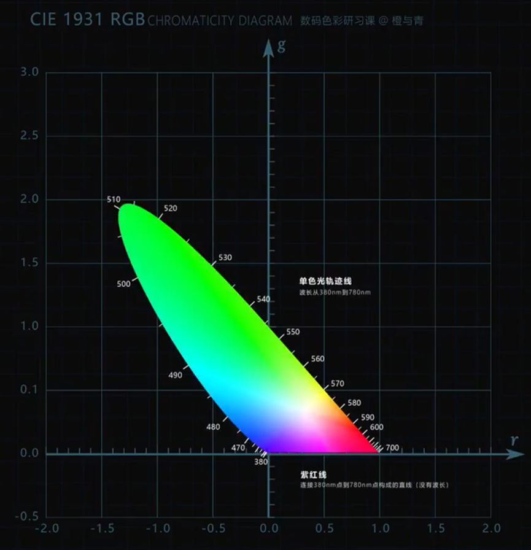
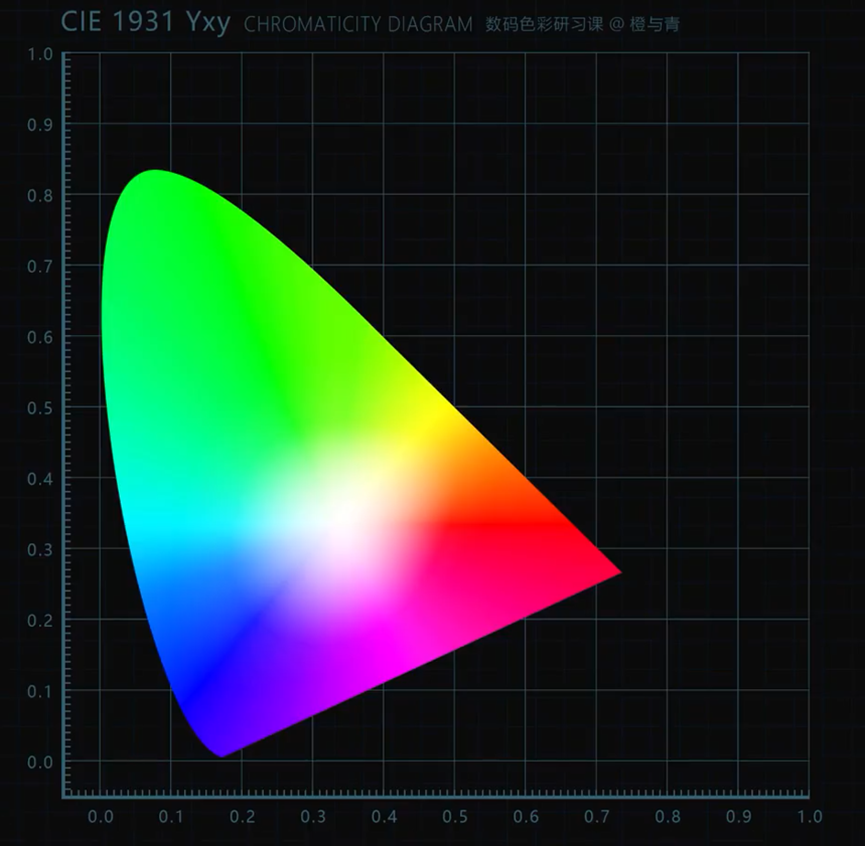
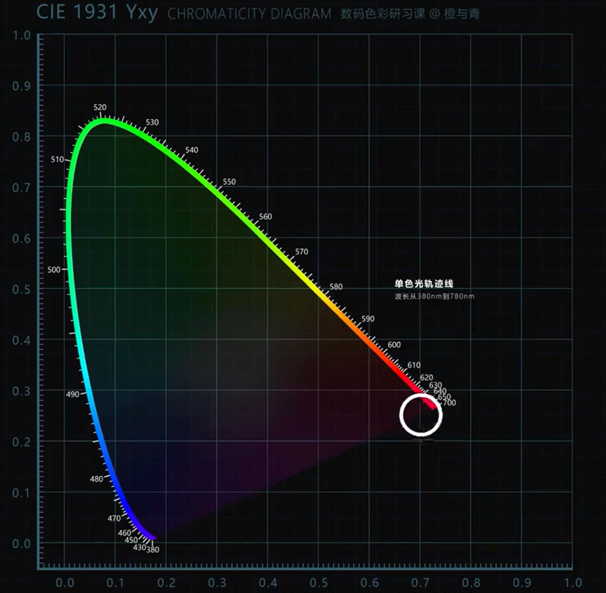
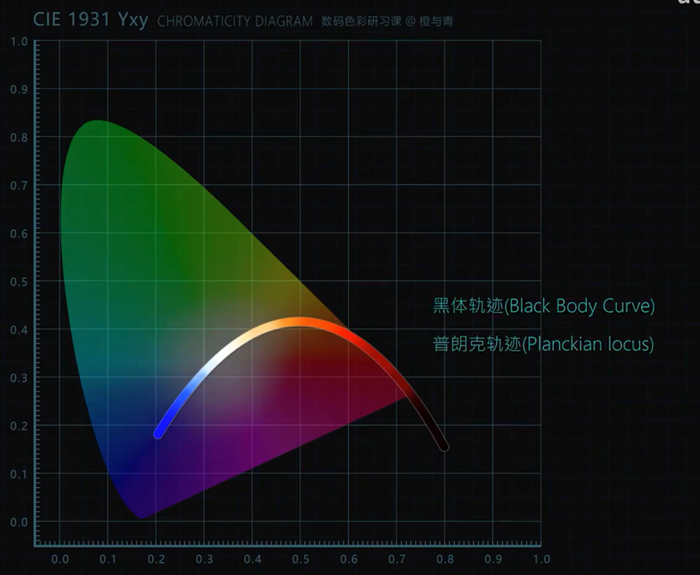
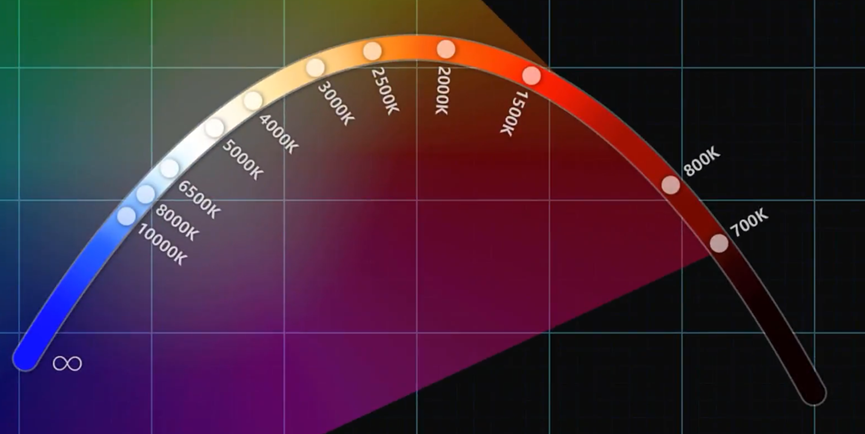
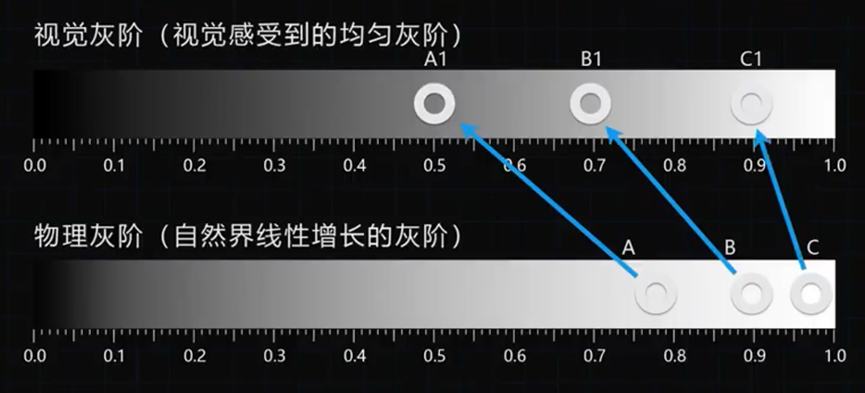
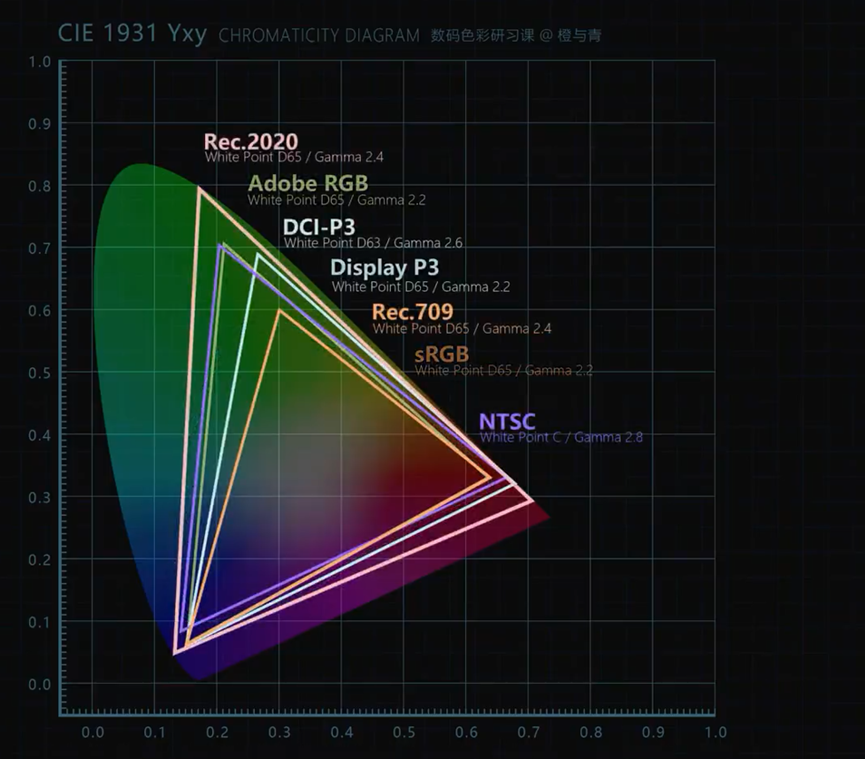
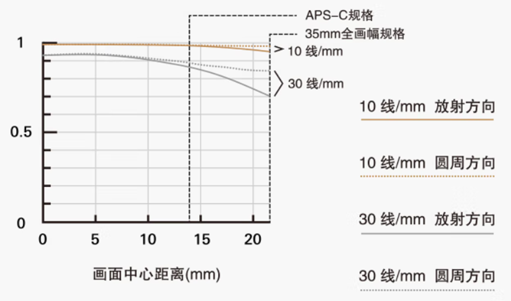
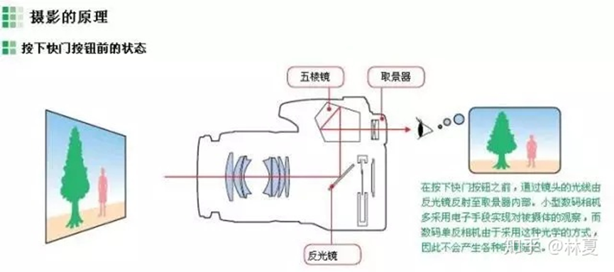
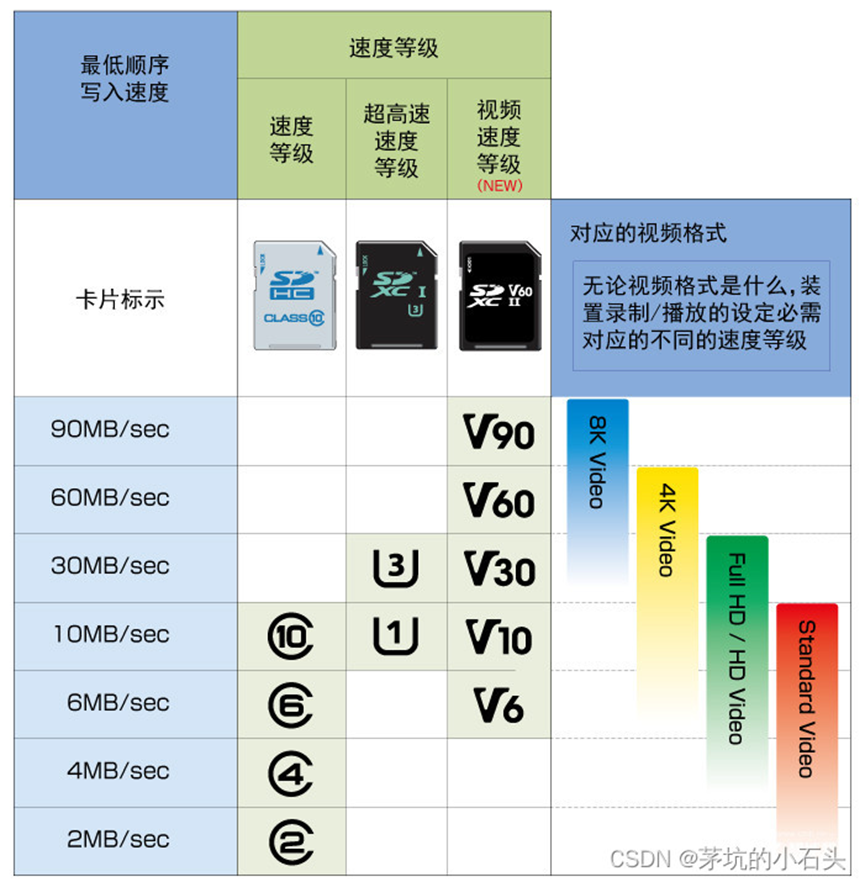

1854年：格拉斯曼总结出颜色混合定律
1855年：麦克斯韦建立颜色方程以及颜色三角形
1931年：国际照明委员会（CIE）进行颜色匹配实验
采用 700.0nm的红、546.1nm的绿、435.8nm的蓝作为三原色，且根据实验结果练级了 CIE 1931 RGB 色度系统，为一个立体空间的三维坐标图
从该色度系统中导出了仅有 RG 两轴的平面坐标图，称为 CIE 1931 RGB 色度图，它是所有光谱色的色品坐标点连在一起而形成的光谱轨迹，解决了颜色定义问题

但以上色度图存在负值，故 CIE 组织从新设计了一个新的 XYZ 坐标系进行空间转换，在不改变原有意义的情况下，通过坐标变换将所有点集中到了新坐标系的第一卦限里，由此形成 CIE 1931 XYZ 标准色度系统，并导出了下面的二维色度图

该色度图从数学角度描述了人类可以看到的所有颜色，也是由自然界中可见光谱组成的最大色彩空间。它的形状近似马蹄，又称马蹄图
外侧曲线为“单色光轨迹线”，波长从380nm到780nm。连接380nm到780nm两端的内测直线为“紫红线”，它并没有波段

越靠近中间白色区域的颜色饱和度越低，越靠近边界外轮廓的颜色饱和度越高
在该色度图中没有完全体现颜色的色貌信息（色相+饱和度+明度），仅体现了色度（色相+饱和度）信息。实际上，该色度图使用（X,Y）坐标描述颜色的色度，使用隐藏参数 Z 描述颜色亮度，如果将 Z 显示出来，该图就不是二维平面图了
换句话说，即使改变某个颜色的明度，也不会改变颜色在该色度图的坐标

色度图中有一条横跨了白色区域并且向下弯曲的曲线，被称为普朗克轨迹或黑体轨迹，它是将每个温度的黑体辐射对应的光色转化为色坐标并标注在色度图上形成的
黑体轨迹上的每一个坐标所对应的颜色，称为该光源的色温，单位为开尔文（K）

0K~700K为黑色，在色度图之外，这说明在此温度范围内并不会辐射可见光，只会发出红外线
700K~1500K为暗红色，1500K以上由深红逐渐变成橙色、黄色、黄白、白色、蓝白、浅蓝、蓝色
黑体轨迹曲线上由 CIE 组织定义的特殊点：
A：绝对色温为2856K，是白炽灯、钨丝灯的光源色温
B：相关色温为4874K，是中午日光的色温
C：相关色温为6774K，是平均昼光、阴天日光的色温
E：等能白，色温5400K，是三原色值达到平衡时形成的
D50：相关色温为5003K，是颜色略微偏暖的光源
D55：相关色温为5503K，是清晨日光的色温
色域（Gamut）是某技术系统所能产生的“颜色总合”及再现色彩范围的能力
在色度图上任取两点，由两点可混合成的颜色都在它们的连线上
色度图上任取三点，由三点可混合形成的所有颜色都在这个三角形内，这个三角形就是色域，色域覆盖面积越大，能表示的颜色范围越广
不同三原色形成的色域不同，有大有小，但无论怎样选择三原色，在整个可见光范围内，都无法覆盖人眼所能见到的所有颜色
有的时候，商品宣传页的色域范围指的是色域容积而不是色域覆盖。色域覆盖是与某个色彩标准例如sRGB的重合率，最高100%，此时sRGB色彩范围完全位于本显示器的色彩范围之中。而色域容积是本显示器的色彩范围和某色彩标准如 sRGB 在色度图上的面积之比，仅表示两者色域覆盖面积的相对大小，不保证 sRGB 色域完全位于本显示器的色彩范围之中。而且色域覆盖很小但色域容积很大的话，显示某色彩标准时反而会出现严重的偏色
屏幕色域不是越高越好。例如在Windows上默认采用100%sRGB，如果不做校色（色彩管理），广色域（超过100%sRGB）显示器常常过饱和，比如sRGB图片在P3屏幕上显示就会过饱和，因为P3色域更广。目前在Windows上最好就是直接用100%sRGB就可以了。而苹果的色彩管理就做的非常好，素材是sRGB的就用sRGB色域显示，是P3的就用P3显示
屏幕校色：即屏幕色彩管理，手动校色是使用校色仪等专业工具，生成ICC文件，它相当于一个函数，能将素材的色彩空间映射到屏幕的色彩空间中
伽马（Gamma）即亮度的非线性采集和还原，决定了整个空间的灰阶的呈现效果

人眼对亮度的感知是非线性的，对暗色调的分辨能力远超亮色调，物理上的50%中灰亮于视觉所感受到的50%中灰。如果显示器以自然界线性增长的灰阶的亮度来显示画面，这将导致画面大部分层次被亮色调占据，这就需要进行伽马马矫正，缩小亮色调与暗色调之间的灰阶差距
视觉上感受到50%的中灰亮度在物理灰阶的18%~21%的位置，也称十八度灰。摄影的测光系统即以18°灰为基准值
伽马值越高，两步就会被压暗以显示更多的层次；越低画面就会越发白。Gamma=2.2是目前主流，也是几乎最佳的伽马值
伽马马矫正是每台显示器必须的过程，这将直接影响需要呈现的光影效果
白点（White Point）是色彩空间中的白平衡点或色温点，是三原色的交汇点，确定了这个色域中的白平衡。若白点偏色，则所有颜色都将偏色
色彩空间（Color Space）是一系列色彩指标的集合，它包含：色域、伽马、白点等信息的规范
有的时候，色彩空间和色域的意思相同
常见色彩空间如下：

sRGB：是目前互联网使用最广泛的色彩空间标准
Windows默认使用sRGB色彩空间
一般色域超过100% sRGB的显示器可能拿色域容积在偷换概念，小心甄别
NTSC：美国彩色电视标准，古老且过时，尽管色域比 sRGB 更大，但无法完全覆盖 sRGB，目前已不再使用。仅有的作用是衡量其它色域的面积大小
诸如72%NTSC=100%sRGB这种等式是厂商用来忽悠买家的，虽然72%NTSC面积确实和sRGB的色域面积差不多，但不代表就是完全覆盖在sRGB色域空间的，甚至可能出现严重偏色
NTSC也可表NTSC信号，和PAL都是电视信号，与色彩无关
AdobeRGB：由 Adobe 定制，在 sRGB 的基础上增加了 CMYK 色域的支持，使得整个色域面积更大。对于印刷、摄影（尤其是拍摄RAW的专业摄影师）等行业来说，买100%AdobeRGB显示器是最优解
P3：广义上包含了 DCI-P3 和 Display P3，DCI-P3是影视行业标准，而Display P3是Apple在 DCI-P3 基础上参考了sRGB而修订出的自己的标准，在白点和伽马上与DCI-P3不同，但是能覆盖的颜色相同
此外还有Rec.709（视频领域）、Rec.2020（709的升级版）等
色彩深度，即每个颜色通道可显示的颜色的多少，代表颜色的细腻程度
目前主流为8bit色深，每个通道可表示 $2^8$ 次方即 256 种颜色，RGB 三个通道可表示 $256^3=1670万$ 种颜色，而10bit可表示超过 10 亿种颜色
如果是N卡，高色深屏幕需要去nvidia控制面板将输出信息改为高色深，否则还是低色深
该技术通过算法，使像素点在不同颜色之间快速切换，利用人眼的视觉暂留效应，从而混合产生新的中间色的错觉。通过该技术8bit可显示接近10bit的色深，但和原生10bit还有差距
衡量颜色的“准确度”，即显示素材是什么颜色，显示器就显示什么颜色的准确度。一般用 ΔE 来衡量显示颜色和标准颜色的偏差，越小越好。软件校色可以部分降低色准值
动态范围（Dynamic Range）是指一个系统、设备或媒介能够处理的信号强度范围，即从最低可检测信号（噪声水平）到最大不产生失真的信号之间的比率。在摄影和视频领域，指的是相机或显示设备能够捕捉或显示的最亮和最暗部分之间的差异
SDR：标准动态范围，无论是显示器还是视频本身，都是目前主流
XDR：极致动态范围，拥有目前能达到的最高对比度和峰值亮度等。主要是苹果在用这个标准
HDR 拥有比 SDR 更高的对比度、峰值亮度等，事实上有以下两个标准：
视频标准：即视频信号编码标准，针对视频本身素质而言
HDR10：最普及的视频HDR标准，开放免费。10bit色深、高色域、高对比度为三个基本点
目前绝大多数中低端的显示器，说是支持HDR10，其含义是支持HDR10视频的解码，本质上并不具备严格的HDR功能。当然有的显示器能打开HDR开关，但效果肯定不怎么样，不如不开
HDR10+：相比HDR10，新增动态元数据
杜比视界（Dobby Vision）：版权标准，12bit色深，更高的对比度和更高的色域，动态元数据
显示器标准：VESA推出的用于衡量显示器素质的标准
诸如HDR400、HDR500、HDR600等，是视频电子标准协会VESA推出的认证显示器HDR显示效果的标准，后面的数字代表开启HDR后的最高亮度不低于该数值
HDR400：原生8bit色深，95%sRGB色域，峰值亮度不低于400nit，全局调光
可以说是假HDR，甚至打开HDR可能有泛白的影响，打开HDR不一定比不打开观感好
全局调光：屏幕只有一个背光分区，只能全屏统一调节，要么全屏更亮，要么全屏更暗
HDR500：10bit色深，90%DCI-P3色域，峰值亮度不低于500nit，区域调光
区域调光：屏幕背光划分为多个区域，各区域能独立调节亮度，能极大地提高对比度。像OLED这种能控制单个像素发光的，显然拥有最高的对比度
在显示器打开HDR后，是无法调节亮度的，因为此时的亮度信息由视频本身提供，HDR就是要完全按视频本身的明暗来显示。当然也有些显示器开了HDR还能调亮度，但那样就和真正的HDR有出入了
视频本质上是由一帧帧的画面构成的，是一个 4D 文件，含有：帧宽、帧高、颜色通道、时间
色深：视频的颜色深度，即用几个bit来表示一个颜色通道，8bit就是RGB三个通道都用8bit来表示，因此总颜色深度为 24bit
PPI：pixels per inch，每英寸像素数，是一个显示器参数
画面清晰度不止和分辨率有关，也和屏幕大小有关，PPI越高，画面越细腻
帧率：Frame Rate，视频种每秒所包含的帧数量
单位为FPS，帧率越高越流畅，但帧率到达某个阈值后，人眼几乎无法感受到提升
比特率：文件每秒所需要的数据量，单位为 bps
未经压缩的视频，有：比特率=宽*高*总色深*帧率，文件体积=比特率*时长，如果不压缩视频的话，视频体积将十分巨大
CBR：恒定比特率，一段视频中比特率为恒定值
VBR：可变比特率，在视频中比特率为变化的值，当有较大画面变化时，比特率将上升
按照指定的方式，将信息从一种形式（格式），转化为另一种形式（格式）
压缩文件
将文字等表达的信息转变成数字等可进行计算的信息
在媒体中，编码的目的是为了前者，以下均指媒体编码
| 种类 | 内容 | 压缩方法 |
|---|---|---|
| 空间冗余 | 像素间的相关性 | 变换编码、预测编码 |
| 时间冗余 | 时间方向上的相关性 | 帧间预测、运动补偿 |
| 图像构造冗余 | 图像本身的构造 | 轮廓编码、区域分割 |
| 知识冗余 | 收发两端对人物的共有认识 | 基于知识的编码 |
| 视觉冗余 | 人的视觉特性 | 非线性量化、位分配 |
| 其它 | 不确定性因素 |
空间冗余：一张图像中，有很多不同的像素都是同一个颜色。图像压缩中，压缩率越高，就会将比较近似的颜色都算作同一种颜色进行压缩，进而影响画质
时间冗余：不同帧的同一个位置的像素，在某一段时间内都是同一个颜色
这种帧是自带全部信息的独立帧，是最完整的画面，占用空间也最大
无需参考其它图像便可独立进行解码
视频中的第一个帧，始终都是 I 帧
编码时，只利用本帧内的空间相关性
需要参考前面的 I 帧和 P 帧的不同部分，才能进行编码，即对前面的帧有依赖性
压缩率比较高，占用的空间比较小
采用空间和时间的相关性，采用运动步长算法来去除冗余信息
需要参考前一帧和后一帧才能进行解码
压缩率最高
因为依赖于后面的帧，故不适合实时传输
比较前后两帧的画面，计算出不同的像素，估计画面中物体的运动，并记录像素运动的轨迹
一般把图像分割成不同的块（block）或宏块（Macroblock），对它们进行比较和计算
如 H.26X 系列、MPEG 系列，它们决定了文件将以什么样的形式进行编码
类似于一个箱子，将已经编码好的视频、音频、字幕等东西，按照一定格式封装到一个文件中
主流封装格式为：MP4、MOV、MKV、MP3等
目的：消除文件中的冗余，以最大的可能压缩文件而又基本不影响画质
基础：利用了人眼对亮度比颜色更敏感的原理
RGB 与 YCbCr 模型（也称YUV），两者之间可相互转化。一般在拍摄时使用 YUV，而在播放时使用 RGB
YCbCr：使用该模型记录画面的色彩和明度信息，将亮度和色度分离开，Y 表示亮度信息，Cb 表示 chroma blue，即蓝色信息，Cr 表示红色信息。chroma原义是色度。最终通过 Y 减去红色、蓝色信息部分的大小，得到绿色信息
一种编码图像时，使得色度分辨率低于亮度的技术
一旦我们能从图像中分离出亮度和色度，则可以利用人眼对亮度比色度更敏感的特性，选择性地提取信息
一般是完全记录明度信息，然后选择性丢掉一些色度信息。相机的一个像素包含 RGB 三个通道，每个通道都可以记录 Y、U、V 的值
YUV 4:2:2 表示以 4:2:2 的比例进行采样。每四个像素中，只有两个采集了色度信息，而另外两个直接沿用前两个的色度信息，也就是每两个像素采集一个色度信息。亮度信息是完整的，每个像素都采集。这种采样尽管丢失了 50 % 的色度信息，但人眼观感区别不大，却减少了文件体积
YUV 4:4:4 即完全采样，三个分量的信息都是完整的
YUV 4:2:0 即每两行的前 4 个像素，只有第一行的两个像素采集了色度信息，另外两个沿用它们的色度；而第二行沿用第一行的色度信息，即每4个像素只采集一个色度信息
锐化：像素级别的对比度调整，对画面影调没有影响，即总体观感上没有影响
纹理：画面中较粗的细节的对比度调整，对画面影调有一点点影响
人像磨皮有用
清晰度：对画面中间调部分的对比度调整，对中间调部分有明显影响
略微降低清晰度，会呈现出柔光的朦胧感
去朦胧：画面总体对比度的智能调整，对总体影调影响非常强烈，又称去除薄雾（去霾）
饱和度：将所有饱和度一并提升，可能会造成色彩溢出
鲜艳度：只增加饱和度低的色彩的饱和度，对已经饱和的色彩影响较小
色彩校准：校准三原色的饱和度
对三原色进行针对性的饱和度调整，能防止颜色溢出和画面偏色，同时达到提升指定颜色的饱和度的目的
MTF 曲线图是镜头性能综合的体现

MTF 曲线主要有两个指标：对比度和分辨率，单位均为%，均用纵轴表示。某镜头的曲线越接近顶部，则该项表现越好
横轴为离画面中心的距离，0~14mm为 APS-C 规格，0~22mm为35mm全画幅规格
10线/mm 表示每 1mm 距离内有 10 条黑白相间的条纹，30线/mm 同理，即10线/mm 表示的是粗线，30线/mm 表示的是细线
粗线表示对比度，细线表示分辨率，一般情况下分辨率要低于对比度的值
一般来说，中心区域成像是最为优秀的，最边缘成像最差；光圈为 F8 时的成像在所有光圈中最优秀，最大光圈时成像最差
MTF 图中的光圈参数是定值，一般会在图外说明。有的镜头会给出两幅 MTF 图，分别展示在最大光圈和最佳光圈（如F8）的表现
两者在取景结构上存在本质不同
单反（Single Lens Reflex，SLR），单镜头反光式取景相机

单镜头：一次只安装一个镜头。在胶片时代存在一个机身安装两个镜头的双反
反光式取景：要求机身有一个反光板和一个五棱镜。取景时，光线穿过镜头，再通过反光板和五棱镜到达取景器
光学取景器：直接通过镜组的透射来看到取景范围，即使关闭相机也能看到图像，所见非所得
单反并不等同于专业相机，只是一种有着特定结构的相机，和画质无关
无反（Millorless Interchangeable-lens Camera，MILC），无反光镜的可更换镜头相机，也称微单相机
无反光镜：微单机内没有任何镜子，采用电子取景，光线射入到传感器上后，摄影者通过电子取景器（本质为一块屏幕）或者显示屏来观察画面
所见即所得：由于电子取景器的画面不是显示画面，而是传感器拍摄到的画面，因此看到的效果等同于实际拍摄效果
体积小、重量轻：没有反光板、五棱镜等结构，微单普遍比单反体积小、重量轻
手机拍照和无反拍照的原理是一致的
无论是单反还是无反，都必须是可更换镜头相机。单反和无反属于并列关系
单电相机指单镜头电子取景式相机，微单就是一种，但单反不是
AF-S：单点自动对焦，半按快门完成对焦后，便不再改变对焦点
AF-C：连续自动对焦，对焦完成后，若对焦物体发生位移，则自动进行跟焦
眼控对焦、AI物体跟踪等均为变种
AF-A：单点或连续自动对焦，自动选择模式，当物体是静物时为 AF-S，当物体发生移动就 AF-C
通过拧动对焦环完成对焦
是AF和MF的结合，在 AF 完成之后，亦可旋转对焦环进行手动微调
对焦区域只针对 AF 而言
广域：在相机整个对焦覆盖范围内，选择能进行对焦的最近物体，进行对焦
区：选择一个区域，相机在这个区域内选择能进行对焦的最近物体，进行对焦
中间：相机只会对焦处于相机视野正中间的物体或物体的一部分
自由点：可自由选择对焦点，相机只会对焦处于该自由点的物体或物体的一部分
测光即通过判断画面中的明暗等级，确定合适的曝光参数
中心：赋予中心点较大权重，其它区域较小权重，进行测光
多重：以整个画面区域作为基准进行测光
点：以某一点作为基准进行测光
镜头对焦的时候，焦距会略微发生变化，导致画面略微放大或缩小，影响视频能力
拍视频时，若大幅变换焦点，则比较容易出现此问题
主要是光学设计和对焦组件之间的设计问题
早期存储卡速度等级使用 Class 等级来标识，主要有 C10、C6、C4、C2四种。Class 后面跟的数字表示该卡最低写入速度，如 Class 10 表示最低写入速度为 10MB/s
而读取速度一般远高于写入速度
Ultra High Speed 超高速等级，目前有 UHS-I、UHS-II、UHS-III 三种版本，最低写入速度分别为 10、20、30 MB/s
实现该标准不仅需要卡支持，也需要设备的支持
Video Speed Class 视频速度等级，由 V+数字 组成，数字代表最低写入速度，如 V30 代表视频拍摄时最低写入速度为 30MB/s
三种标准可以出现在同一张卡上
录制 4K 视频一般需要 V30 以上的卡

使用机械快门，经典快门方案
快门由前帘和后帘组成，前帘打开开始曝光，后帘关闭结束曝光。由于前帘的运动发生在曝光开始时，所以快门幕帘引发的震动可能影响到照片的清晰度，也会延长快门时滞
有两次快门声音
没有物理快门组件，前帘和后帘都由逐行扫描的方式完成
没有机械快门动作，拍摄时完全静音
电子快门能将快门速度提升到比机械快门更高的水平
电子快门会产生果冻效应，发生畸变；此外，大部分相机在使用电子快门时会降低 RAW 的位数，如 14bit 降低到 12bit
手机全部都是电子快门
结合了电子快门和机械快门的特点，取长补短，但也产生了新问题
以逐行扫描的形式代替机械前帘，消除了快门幕帘产生的机震
在大光圈、高速快门的时候会有切光斑的问题，即画面上下曝光变得不均匀，且容易造成焦外的画质劣化。使用电子前帘快门尽量不要使用 $\frac{1}{500}s$ 以上的快门
当大光圈或高速快门拍摄时，将电子前帘换成机械快门；大部分情况下均可使用电子前帘快门
默认电子前帘快门不会像电子快门那样影响 RAW 画质
电子前帘有一次快门声音
将拨杆拨到AF/MF，按住拨杆中心键，若原本是自动对焦，则会在按住的这一段时间切换为手动对焦（可先AF，再按住手动精对）；若原本是手动对焦，则会切换到自动对焦
将拨杆拨到AEL，按住拨杆中心键，则将当前曝光锁定，即使转变拍摄对象也不会改变曝光三参数
LookUp Table，即颜色比对表，文件后缀为 .cube
LUT 本质上是一个RAM，它把数据事先写入RAM后，每一个输入信号就等于一个地址查找表，找出地址对应的内容，然后输出
通过套用 LUT，可以快速地模拟胶片的色彩和质感特性，而通常这种特性是难以通过传统的调色方法实现的
通过使用模拟胶片的LUT可以快速达到不错的效果，尤其是针对Log拍摄的影响，基本都需要套用官方提供的LUT文件
传统CMOS的经典结构，入射光穿过片上透镜和滤色片，再穿过金属电路，最后到达二极管，被吸收
主要改善了画质和感光度
基本组成和前照 CMOS 一致，只是排布顺序不一样
入射光穿过片上透镜和滤光片，然后到达光电二极管，不会到达最底层的金属电路
背照式大幅提升了CMOS的感光度（30%以上），并防止了光子在穿过金属电路层时的反射导致的像素之间的串扰等
工艺难度较大，没有FSI成熟
主要改善信号处理
原本像素区域和金属电路都在同一块晶圆上进行蚀刻，而堆栈式将两者分开，可采用不同制造工艺，如金属电路采用比像素更小的工艺制程，最后将其组装堆叠在一起，以实现更出色的性能
堆栈式解放了电路的处理能力，在此之上还可以直接增大缓存，极大地提高速度，让HDR、8K、高速连拍成为现实
现在静物摄影、微距摄影中广泛使用的一种技术
有些情况，如微距摄影，传统的光圈值不够小，导致被摄物体只有一小部分位于焦内，这时候，为了让整个物体都位于焦内，就需要使用景深合成
设备：稳固的三脚架、快门线（若相机没有焦点包围功能）
拍摄：光圈优先，且将光圈调到比较小，以尽可能快的速度拍完一组照片，每张照片拍完后，把手动将焦点略微改变，继续拍，直到全部覆盖整个物体
关闭防抖、全局测光
拍摄需尽可能快，是因为某些时候光线变化较快，防止前面和后面的照片出现白平衡等的差异，后期调整比较麻烦
光圈越小，景深越大，所需要拍摄的张数就可以减少，但也不能太小，否则画质会降低、CMOS上的灰尘会显现
后期：
将这组照片导入Lr，批量处理一番，调色
若照片出现了不同的亮度和白平衡，则需要手动调整
将完成调色的照片，导入PS（同一个画布上）
可以在Lr中全选图片，右键--在应用程序中编辑--在ps中作为图层打开
全选图层，上方工具栏--编辑--自动对齐图层
这一步是为了克服焦距改变时的呼吸效应
全选图层，编辑--自动混合图层，选择堆叠图像，并勾选“无缝色调和颜色”
融合完成之后，每张图旁边都多了一个蒙版，是抓取每个图层最清晰的部分进行融合的部分
合并所有图层
也称 ISO Auto 最小速度，A档的延时摄影神器，轻松拍摄日转夜转星空
在A档下，使用ISO AUTO，确定光圈后，当光线开始变弱时，会优先按：快门速度、ISO上限、快门速度来增加曝光值。即当光线不够时，优先降低到快门速度阈值（设置的安全快门），然后提高ISO，一直到ISO上限，之后再降低快门速度
两个问题：毕竟不是M档，因此相机还是会计算正确的曝光值，倘若有灯光等干扰，则画面可能会一闪一闪，且后期无法去除；另外若日转夜转星空，日落和星空所需要的曝光时间差距太大，导致间隔时间的设置会出现问题，若设置太长，则日落速度可能太快；若太短，则拍星空时会飙到很高的ISO
建议：日转夜转星空，还是牺牲ISO吧，把快门速度给保住
主要用途：在拍摄光比较大的场景，若想让某一物体曝光正常，而将主体转到另一个物体时即可使用
如在黄昏时，想要让天空曝光正常，而对焦、主体等落在前景人物身上，则可使用，拍出剪影效果
又如拍摄全景接片，若曝光不同容易造成接片困难。此时就可以考虑按住AEL，锁定曝光之后再多次拍摄照片
注意：在延时摄影中，AE意为“曝光锁定”。除非是自己布景，否则不要锁定AE。锁定曝光后，整个延时摄影中曝光参数都不会发生变化
在手机摄像头的数字变焦过程中，使用了一个被称为“插值”的技术。这种技术可以根据原始图像中的像素信息，推算出裁切后的新图像的像素信息，从而使得裁切后的图像看起来像是通过光学变焦得到的图像一样
具体来说，数字变焦使用的是裁切加插值的方法，先通过裁切将图像的一部分进行放大，然后使用插值技术对被裁切的图像进行放大处理，从而得到所需的放大效果。这个过程中，插值技术会根据已有的像素信息和图像中的其他细节来推算出新像素的值，从而使得图像中的细节得以保留
在数字变焦的过程中，由于插值技术的使用，图像的分辨率不会发生改变。虽然经过裁切后，图像中的像素数量减少了，但是通过插值技术，每个像素都会被重新计算和填充，使得图像分辨率保持不变。数字变焦得到的图像虽然分辨率相同，但由于裁切和插值的影响，其细节和清晰度可能会受到一定的影响
比原照片直接裁切画质保持得更好，如果实在需要拍摄非常远的东西，可以使用清晰影像缩放
只能在拍摄jpg图片时使用该功能
可能会出现摩尔纹等情况，视情况使用
同时移动镜头位置并进行变焦，以达到主题大小不变而背景变化的效果
例如：把相机往朝着可乐的方向移动，同时把镜头以合适的变焦速率往广角方向推，即达到希区柯克变焦效果
可以拍剪影，但是必须保证剪影（阴影）有明确的边界，否则会使照片看起来不通透
HDR或者包围曝光，后期合成
提前构想好要拍摄出什么效果，人像尤为需要注意，可以利用反光板补光
注意竖向接片时银河的高度会不会超过视角，且竖向接片的时候，至少留四分之一给地景
如果竖向接片时，银河没有垂直地面，可能会造成角度的歪斜
接片的每两张之间需要至少三分之一的重合
星空照片要保证不脱线，但是如果做成视频，则些微的脱线并不会影响观感
像素越高的相机，就需要更短的快门速度
如果 ISO 比较高，可进行缩图操作，牺牲像素降低噪点数目
长曝光时（不只是星空），需关闭：长时间曝光降噪、Steadyshot，并切换成M档、机械快门、RAW
延时拍摄时，间隔时间是指这次按下快门和下次按下快门的时间，因此间隔时间必须大于快门时间。如：单张曝光13s，则可以将间隔时间设置为15s
可拍摄一张超长曝光、低ISO的、前后景都清晰的照片充当地景，但需要注意不能用 B门 拍，会降 bit
选个好的前景，比如湖泊、山峰等，当然也可以是广阔的大地
利用好最低快门速度
可使用中焦镜头接片，如 35mm 就是很好的接片焦段，注意曝光、对焦都是准确且一致的
不一定非得拍延时日落，可对着另一侧拍日照金山，也是不一样的体验。使用长焦更有可能拍摄到日照金山或月照金山
银心部分并没有在天赤道上，而东西方向在。所以若拍东西方向的星空，则曝光需控制在最低的范围，而拍摄银河，可适当放宽一档。银心一般在南天半球-20°度左右
前景有时会过于暗淡，就算开ISO3200、最大光圈、15S曝光也不一定能拍出来。所以有月亮不一定是坏事，最好是弯月，可补充前景的光线。当然最好的还是选择湖面等有反射的
延时光拍银河其实没啥意思，要结合地景，这样拍出来的效果才更加震撼